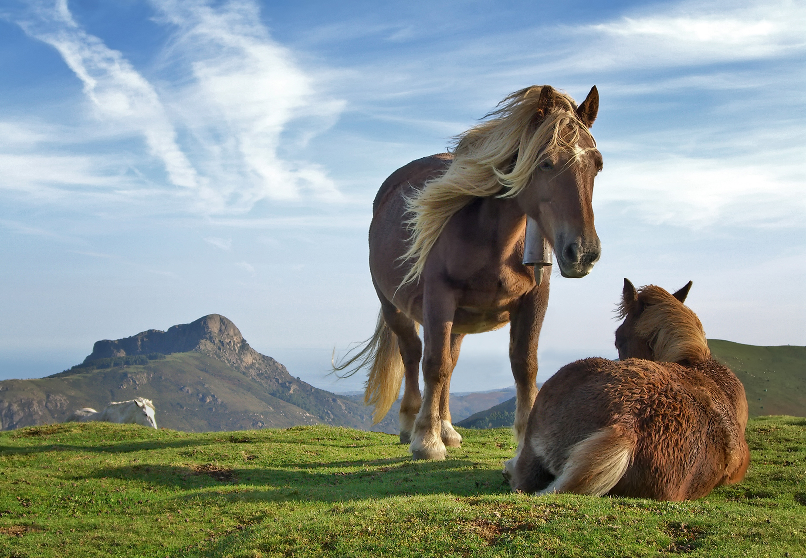

Descripción del Caballo
Los caballos son animales majestuosos que han sido compañeros del ser humano durante miles de años. Su velocidad, fuerza y belleza los han convertido en un símbolo de libertad y nobleza. Existen más de 300 razas de caballos, cada una con características únicas que los hacen adecuados para diversas actividades, desde la equitación hasta el trabajo agrícola.
Los caballos son herbívoros y se alimentan principalmente de pasto, heno y granos. Su sistema digestivo está diseñado para procesar grandes cantidades de fibra, lo que les permite mantener su energía y salud. Además, tienen un sentido del olfato y del oído altamente desarrollados, lo que les ayuda a detectar peligros en su entorno.
Son animales sociales que viven en grupos, conocidos como manadas. Se comunican entre sí a través de vocalizaciones y lenguaje corporal, y desarrollan vínculos estrechos con otros caballos y con los humanos. Su capacidad para formar relaciones y su inteligencia hacen que sean compañeros leales y confiables.
En la actualidad, los caballos se utilizan en una variedad de actividades, desde deportes y entretenimiento hasta terapia y trabajo agrícola. Su presencia en la cultura humana es profunda y variada, siendo símbolos de fuerza, belleza y amistad.
